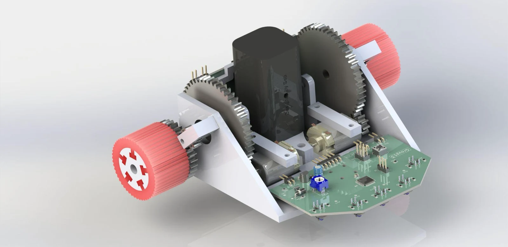

ROBOTICS / EMBEDDED SYSTEMS / CONTROL
Autonomous
line follower.
A complete mechatronic system: custom electronics, a purpose-built drivetrain, bare-metal firmware and a wireless optimisation workflow that closes the loop between the robot and its data.

ACTUAL CAD / INTERACTIVE
Get closer.
Turn it around.
Drag to orbit the real PCB assembly. Zoom in, inspect both sides, or open the complete design library for every board, mechanical model and export.
All models & downloads ↗01 / THE CHALLENGE
Start with the system.
The brief called for an autonomous robot that could follow a narrow line through tight corners as quickly as possible. Performance depended on much more than PID gains: sensor placement, traction, motor drive, electrical stability and mechanical inertia all shaped the response.
The Group 13 project brought those disciplines together in a custom platform, with an ATmega4808 reading a TCRT5000 infrared array and driving the motors through a purpose-designed H-bridge.
02 / ENGINEERING DECISIONS
The thinking behind the build.
Separate sensing from power
A modular sensor PCB and driver PCB made sensor placement more flexible and individual boards easier to rebuild or replace. The sensor board integrated the microcontroller and line detection circuit.
Build a tuning loop around the robot
An ESP32 wireless bridge connected the embedded controller to a Python desktop application. The application sent candidate PID gains, recorded the response and evaluated a weighted cost function for Bayesian optimisation.
Treat mechanics as part of the controller
The lightweight printed chassis, custom gearbox and cast plastisol tyres were developed alongside the control system. Iteration addressed the traction, packaging and inertia that firmware alone cannot fix.
Design for the electrical transient
Motor current spikes caused brown-out resets during development. A 1000 μF supply capacitor was introduced to support the microcontroller through short current transients.
03 / A CLOSER LOOK
From the project workspace.
Explore the design and analysis assets. Select an image to view the detail.
04 / OUTCOME & LEARNING
What the work revealed.
The report records an average control loop of approximately 500 Hz, printed PLA mass of 95.7 g, and peak acceleration current of 1.8 A. Wireless parameter changes and remote recovery made the tuning workflow easier to repeat.
The documented track time was 15.1 seconds against a 3-second target. A downforce fan prototype also introduced vibration that hurt stability. These results made the next priorities clear: improve the physical response and tuning consistency, and evaluate each subsystem by its effect on the complete robot.
The integration is the engineering.
A faster control loop cannot compensate for every mechanical or electrical limitation. The value of the project was building the tools to observe those limitations, test a change and connect the result back to the system.
05 / CONTEXT & CREDITS
The people and the tools.
Group 13 · University of Canterbury. Team: Jules Webb, Alex Bell, Sebastian Harris and Charlie Beagley. Design images, technical decisions and reported results are drawn from the shared project report and assets.